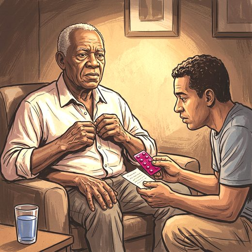

Ferramenta desta aula
Dose equivalente de levodopa. Roda no navegador, sem cadastro.
Consulta rápida à beira do leito
Condutas, doses e interações.
Referências da aula · 6
- Fox SH, Katzenschlager R, Lim SY, et al. International Parkinson and Movement Disorder Society evidence-based medicine review: update on treatments for the motor symptoms of Parkinson's disease. Mov Disord. 2018;33(8):1248-66. doi:10.1002/mds.27372. PMID 29570866.PubMedDOI
- Brasil. Ministério da Saúde. Protocolo Clínico e Diretrizes Terapêuticas da Doença de Parkinson. Portaria Conjunta SAES/SECTICS nº 16, de 1º de agosto de 2025 (Conitec, Relatório de Recomendação nº 957, dezembro de 2024).
- 2023 American Geriatrics Society Beers Criteria® Update Expert Panel. American Geriatrics Society 2023 updated AGS Beers Criteria® for potentially inappropriate medication use in older adults. J Am Geriatr Soc. 2023;71(7):2052-81. PMID 37139824. doi:10.1111/jgs.18372.PubMedDOI
- National Institute for Health and Care Excellence. Parkinson's disease in adults (NG71). London: NICE; 2017 (com atualizações).
- Antonini A, Stoessl AJ, Kleinman LS, et al. Developing consensus among movement disorder specialists on clinical indicators for identification and management of advanced Parkinson's disease: a multi-country Delphi-panel approach. Curr Med Res Opin. 2018;34(12):2063-73. doi:10.1080/03007995.2018.1502165. PMID 30016901.PubMedDOI
- Parkinson's Foundation. Hospital care fact sheet. 2023.
Documentos oficiais
Leis e publicações do Ministério da Saúde sobre o cuidado da pessoa idosa, de acesso livre.
Abrir os documentos